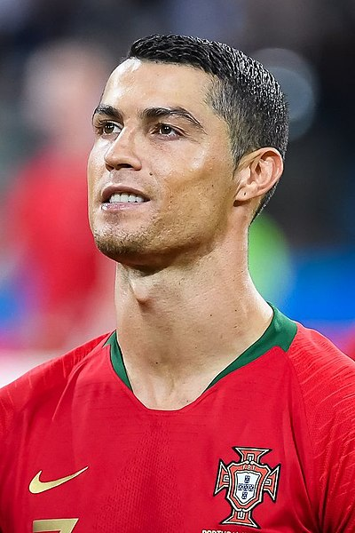

GOAT



Títulos
Sporting
- Supertaça de Portugal: 2002
Manchester United
- Campeonato do Mundo de Clubes da FIFA: 2008
- Liga dos Campeões da UEFA: 2007–08
- Campeonato Inglês: 2006–07, 2007–08, 2008–09
- Taça da Inglaterra: 2003–04
- Taça da Liga Inglesa: 2005–06, 2008–09
- Supertaça da Inglaterra: 2007, 2008
Real Madrid
- Campeonato do Mundo de Clubes da FIFA: 2014, 2016, 2017
- Liga dos Campeões da UEFA: 2013–14, 2015–16, 2016–17, 2017–18
- Supertaça da UEFA: 2014, 2016, 2017
- Campeonato Espanhol: 2011–12, 2016–17
- Taça do Rei: 2010–11, 2013–14
- Supertaça da Espanha: 2012, 2017
Juventus
- Campeonato Italiano: 2018–19, 2019–20
- Supertaça da Itália: 2018, 2020
- Coppa Italia: 2020–21
Al-Nassr
- Copa dos Campeões Árabes: 2023
Seleção Portuguesa
- Campeonato Europeu: 2016
- Liga das Nações da UEFA: 2018–19
Portugal Sub-21
- Torneio Internacional de Toulon: 2003
Voltar para a primeira página